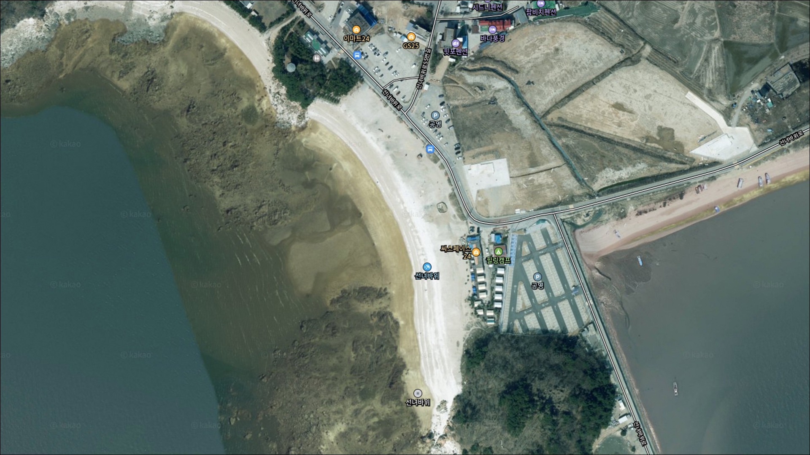
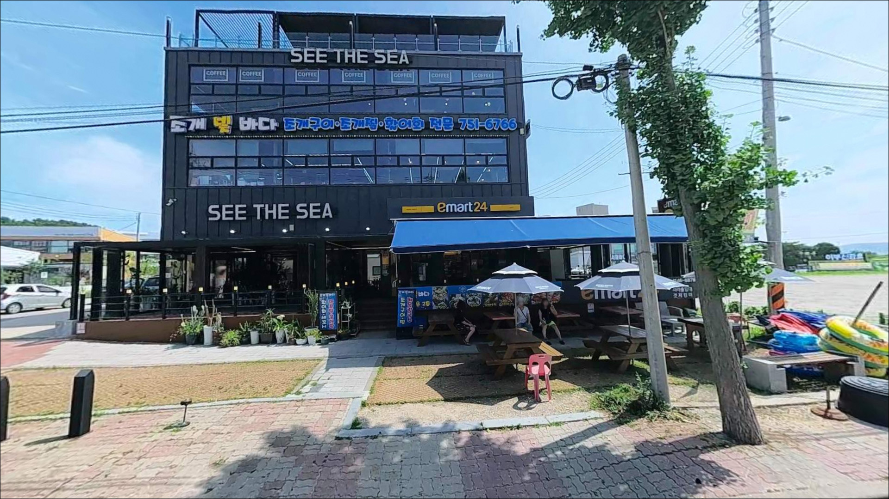
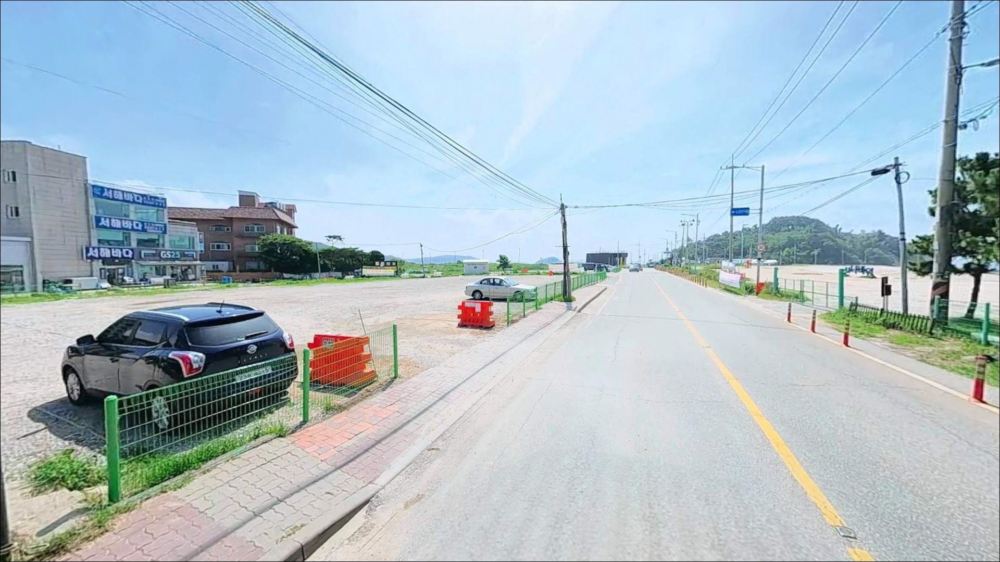
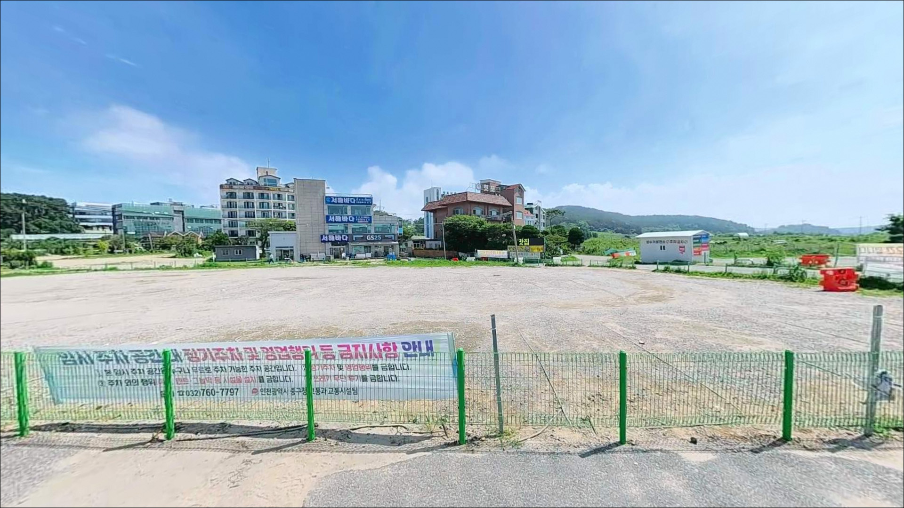
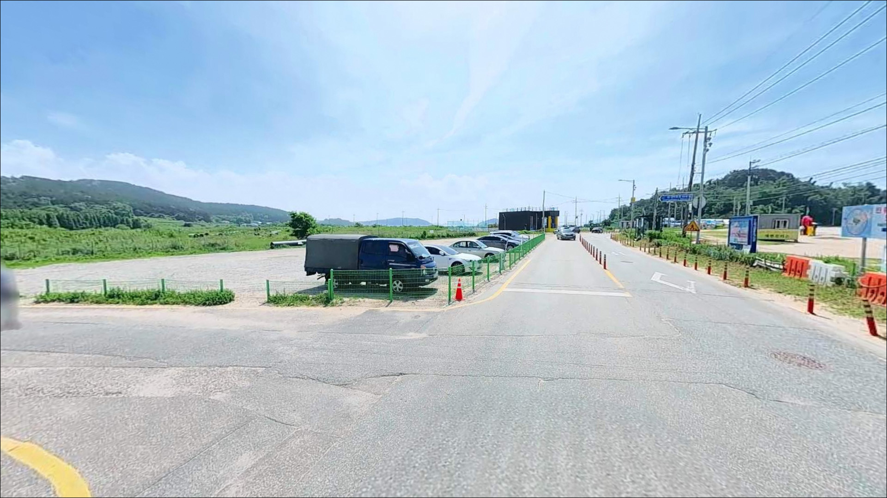
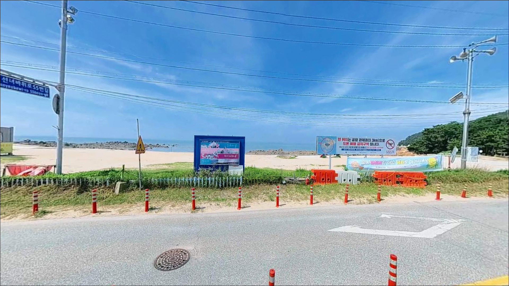
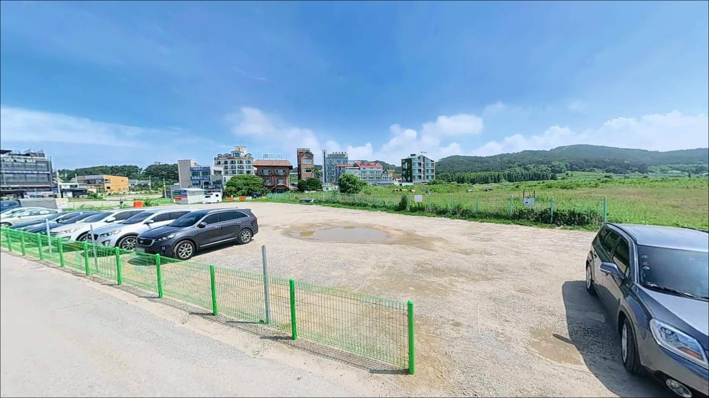
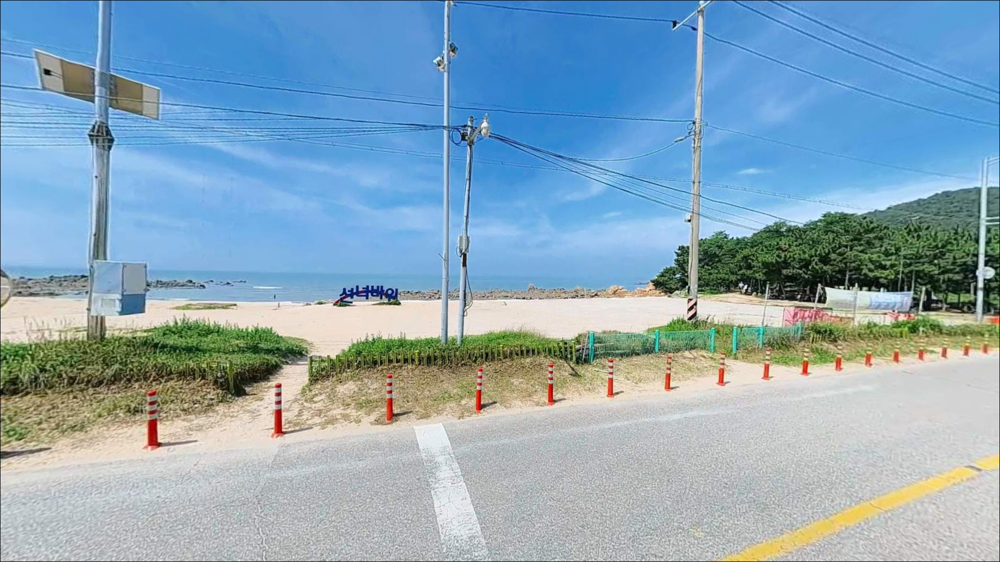
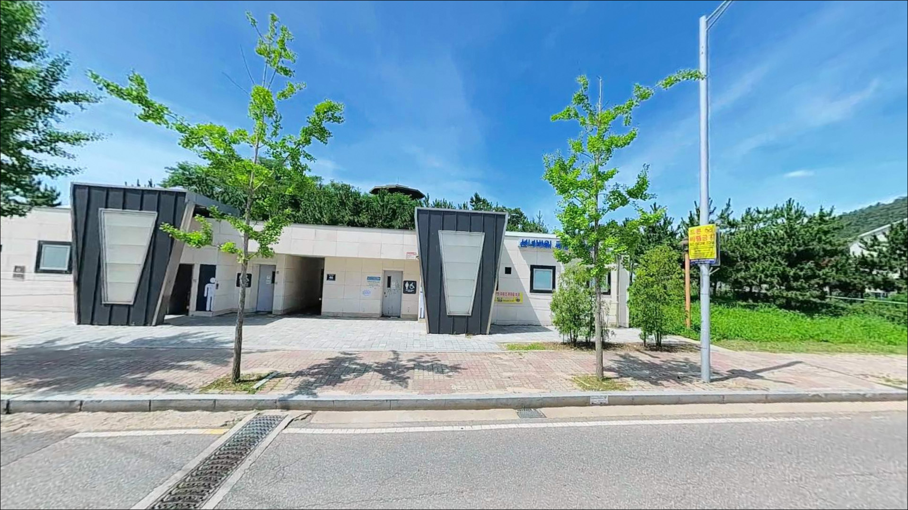

선녀바위해수욕장, 영종도 인천 중구 풍경이 깊은 여운을 남기는 차박, 낚시 해안


포인트 안내
선녀바위해수욕장
인천 중구 을왕동 678-188
서해 갯바위 포인트에서 가장 흔히 발생하는 실수는
물때를 확인하지 않고 도착하는 것입니다.
간조 타이밍과 겹치면 갯벌이 넓게 드러나
어떤 채비를 써도 낚싯대를 펼 자리를 찾기 어렵습니다.
이 글은 선녀바위해수욕장의 지형 구조,
물때 기반 진입 타이밍,
낚시 방식별 적합 조건에 집중합니다.
조황 단정이나 특정 어종 보장은
이 글의 범위에 포함되지 않습니다.

1. 진입 동선과 포인트 접근성
선녀바위해수욕장은 영종도(용유도 권역) 서해안에 위치합니다.
인천공항고속도로 용유 방면 출구에서
해안 방향으로 이동하면 선녀바위로를 통해
해변 입구까지 닿는 구조입니다.
도로 접근성은 일반 승용차나 SUV 기준으로
큰 무리 없이 진입 가능한 수준입니다.
해변 바로 앞에 무료 공영주차장이 갖춰져 있어
차량 접근 자체는 편리한 편입니다.
그러나 성수기 주말에는 주차장 포화가 빠르게 진행되는 편이라,
이른 아침에 도착하지 않으면
주차 공간 확보 자체가 어려워지는 상황이 발생합니다.
평일이나 비성수기 방문이 이 포인트를
여유 있게 쓰는 조건입니다.
루프탑 텐트나 대형 짐을 실은 차량이라면
진입로 굴곡 구간 폭원을 출발 전에
미리 확인하고 가는 편이 좋습니다.
해변 앞 공간은 회차가 비교적 수월한 구조로 보이며,
선착장 쪽 공간도 부족할 경우
보조 주차 후보로 살펴볼 수 있습니다.

2. 차박 환경과 야간 체류 여건
선녀바위해수욕장은 관광 목적으로 정비된 해변입니다.
주변에 카페와 숙박시설이 일부 들어서 있고,
을왕리해수욕장과 해안 둘레길로 연결되는 위치라
완전한 야생형 차박 분위기보다는
관광 해변에 가까운 환경입니다.
차박이란 차량을 숙박 공간으로 활용하며
현장에서 하룻밤 머무는 여행 방식입니다.
공영주차장이 해변 바로 앞에 있어
차 안에서 간단히 하룻밤 머무는 형태의 접근은
구조적으로 가능한 편입니다.
다만 2023년부터 텐트 설치 및 취사 제한이
적용된다는 정보가 있어,
방문 전 인천중구청에 현행 규정을 먼저 확인해야 합니다.
야간에는 상가 조명과 가로등으로
어느 정도 밝음이 유지될 가능성이 있습니다.
서쪽으로 열린 해안 구조라 서풍이 강한 날은
바람 영향을 직접 받는 편이며,
기상 예보에서 풍속을 함께 확인하는 것이
차박 체류 결정의 기준이 됩니다.


3. 주변 편의시설 및 인프라 현황
해변 내 화장실이 갖춰져 있습니다.
해변 인근에는 조개구이, 횟집, 카페가 일부 있어
식사 해결이 완전히 불가능한 위치는 아닙니다.
다만 야간이나 비성수기에는 운영 시간이 줄어드는 경우가 있어
식수와 간단한 먹거리는 사전에 준비해두는 편이 안전합니다.
편의점은 을왕리해수욕장 방향으로
약 1.5~2km 거리에 있습니다.
낚시 소품이나 얼음이 필요하다면
선녀바위로 향하기 전 을왕리 방면에서
미리 해결하는 것이 동선상 효율적입니다.
주유소도 을왕리 방면이나 영종도 내부로
이동이 필요한 위치입니다.
연료가 여유롭지 않다면
출발 전 미리 채워두는 편이 좋습니다.

4. 방문 전 준비사항과 체크 포인트
이 포인트에서 가장 먼저 챙겨야 할 것은
물때입니다.
서해 인천권은 조차가 커서
간조와 만조 사이 수위 변화가 상당한 편입니다.
바다타임에서 을왕리 기준 물때를 확인하고,
만조 전후 2~3시간을 낚시 타이밍으로 설정하는 것이
이 포인트를 제대로 쓰는 기본 전략입니다.
기암과 갯바위 구간을 이동할 때는
바위 표면이 미끄러운 경우가 많아
낚시화나 미끄럼 방지 신발이
발판 안정성에 직접 영향을 줍니다.
야간 갯바위 구간 이동 시
헤드랜턴은 선택이 아닌 필수 장비이며,
구명조끼도 함께 착용하는 것이 기본 안전 조건입니다.
기상 변화 속도가 빠른 서해 특성상
출발 당일 아침에 해상예보를 다시 한번 확인하는 것이 좋습니다.
풍속이 강하거나 너울성 파도가 예보된 날은
갯바위 접근보다 해변 모래밭 구간을 우선으로 활용하고,
채비는 밑걸림을 대비해 여분을 넉넉히 준비합니다.

5. 간조에 도착하면 낚시가 어려운 이유
선녀바위해수욕장은 모래해변과 기암괴석이 혼합된 구조입니다.
선녀바위 본체가 해변 한편에서 바다 방향으로 돌출되어 있고,
그 주변으로 바위 지대와 여밭이 형성되어 있습니다.
바위 끝단과 여 경계 부근에서
국지적인 수심 변화가 나타날 가능성이 있어
이 구간이 낚시 포인트로 활용 가능한 자리입니다.
서해안 특성상 조차가 크기 때문에
간조 시에는 갯벌과 자갈밭이 넓게 드러납니다.
물이 빠진 상태에서는 포인트가 육지가 되어버리는 구조라
낚시 효과 자체를 기대하기 어렵습니다.
만조 전후에 바위 주변 수심이 충분히 차올라야
채비를 안정적으로 운용할 수 있는 조건이 만들어집니다.
정조 시간 전후 1~2시간이
조류 흐름과 수심 조건이 겹치는 타이밍입니다.
바닥은 모래, 자갈, 바위가 혼재하는 지형으로
자리에 따라 밑걸림 정도 차이가 있는 편입니다.
바위 경계 구간에서는 채비 손실에 대비해
여분 봉돌과 바늘을 충분히 챙겨두는 것이 좋습니다.
가기 전에 최신 조황은 꼭 검색해 보시기 바랍니다.

6. 이 지형에 어울리는 낚시 스타일
갯바위 루어낚시가 이 포인트에서
가장 먼저 고려해 볼 만한 스타일입니다.
기암과 여밭 구간은 우럭이나 노래미류가
숨어들기 좋은 지형 조건을 갖추고 있습니다.
지그헤드 리그에 2~3인치 그럽웜을 조합해
바위 경계선을 천천히 더듬는 방식이
이 지형에 가장 잘 맞는 편입니다.
만조 전후 조류가 살아날 때 루어 반응이 올라오는 경향이 있어
입장 타이밍을 조류 변화에 맞추는 것이 유리합니다.
원투낚시는 모래와 자갈이 혼합된
해변 구간에서 시도해 볼 수 있습니다.
이 해역에서 기대해 볼 수 있는 어종은
망둥어, 숭어 계열이며
계절에 따라 광어를 노려보는 낚시인도 있습니다.
봉돌 무게는 조류 세기에 맞춰 조절이 필요하며,
만조 전후 조류가 흐를 때
입질 빈도가 높아질 가능성이 있습니다.
찌낚시는 바위 주변 수심이 깊어지는
만조 전후 시간대에 기대해 볼 수 있는 방식입니다.
바위 끝단이나 돌출 구간에서
찌를 조류 방향으로 흘리는 스타일이
이 지형 구조에 어울립니다.
숭어나 감성돔류가 서식하기 좋은 환경이 갖춰질 수 있는
조건의 지형이지만,
물때와 계절 조건이 선행되지 않으면
찌낚시 자리를 잡기 어렵습니다.

7. 대안 포인트와 플랜 B 동선
선녀바위 조건이 여의치 않다면
같은 해안선에 있는 을왕리 선착장이
첫 번째 대안입니다.
선녀바위에서 북쪽으로 약 1.5km 거리에 위치하며,
소형 선착장 구조와 갯바위 구간이 결합되어 있어
자연 갯바위보다 안정적인 발판에서
루어낚시를 시도해 볼 수 있는 포인트입니다.
거북바위해수욕장은 선녀바위와
바로 인접한 위치에 있습니다.
두 해변 사이 지형 변화를 이용해
포인트를 번갈아 탐색하는 방식도
이 권역에서 시간을 효율적으로 활용하는 방법입니다.
왕산해수욕장은 을왕리보다 한산한 편으로
알려진 해변입니다.
선녀바위 주차 포화나 인파가 많은 날에는
왕산 방면으로 이동해
조용한 환경에서 낚시와 차박을 겸하는 동선도
고려해 볼 수 있습니다.

물때를 맞추면
선녀바위가 달라 보입니다
갯바위 루어나 원투낚시를 즐기는 낚시인이라면
선녀바위해수욕장의 기암 지형은
노려볼 만한 구조 조건을 갖추고 있습니다.
다만 서해 특성상 조차가 크기 때문에
물때를 맞추지 않으면
드러난 갯벌 앞에서 시간만 흘려보내는
상황이 될 수 있습니다.
만조 전후 타이밍을 기준으로 출발 시각을 역산하는 것이
이 포인트를 제대로 활용하는 첫 번째 조건입니다.
을왕리와 왕산 상권이 가까이 있어
당일치기 낚시 베이스로 활용하기 편리한 위치입니다.
차박을 겸하려는 경우에는
텐트·취사 규정을 방문 전에 먼저 확인해 두면
현장에서 계획을 바꾸는 상황을 피할 수 있습니다.
수도권에서 한두 시간 내로 닿는
서해 갯바위 해변에서
물때에 맞춰 낚싯대를 펼고
차 안에서 하룻밤을 보내는 여정이라면,
선녀바위해수욕장은 꽤 매력적인
낚시 차박 베이스가 될 수 있는 곳입니다.